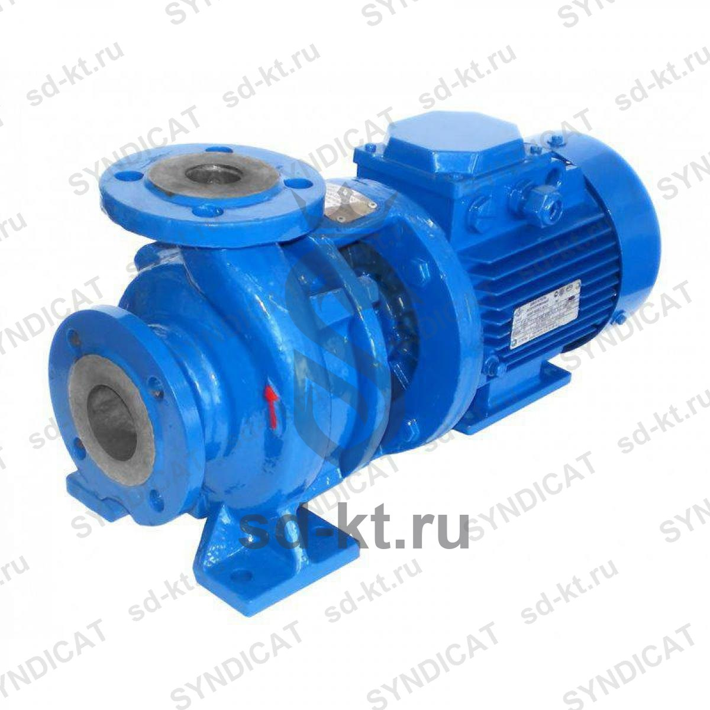

Насос КМ 40-32-160E (6 м3/ч, 28м, 1,1 кВт)
Артикул: 0927
Промприбор (Ливны)
Раздел: Консольно-моноблочные насосы КМ и КМН · АЗС
| Мощность двигателя | 1,1 |
| Питание насоса | 380 |
Цена и наличие — по запросу. Поставляем оригинал и аналоги. Доставка по России.
Описание
Насос КМ 40-32-160E (6 м3/ч, 28м, 1,1 кВт) производства Промприбор (Ливны) — позиция из раздела «Консольно-моноблочные насосы КМ и КМН» для АЗС. Компания SYNDICAT поставляет оборудование и комплектующие для автозаправочных и газозаправочных станций по всей России. Цена и наличие «Насос КМ 40-32-160E (6 м3/ч, 28м, 1,1 кВт)» — по запросу: оставьте заявку или позвоните, подберём оригинал или аналог и рассчитаем доставку.